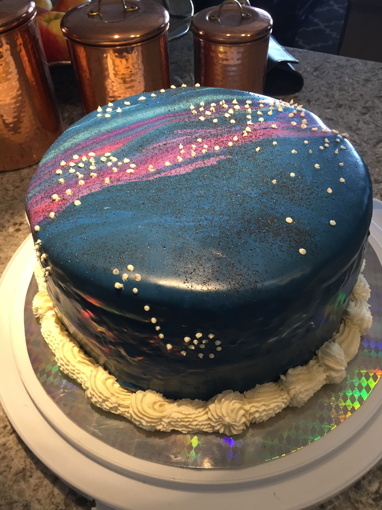
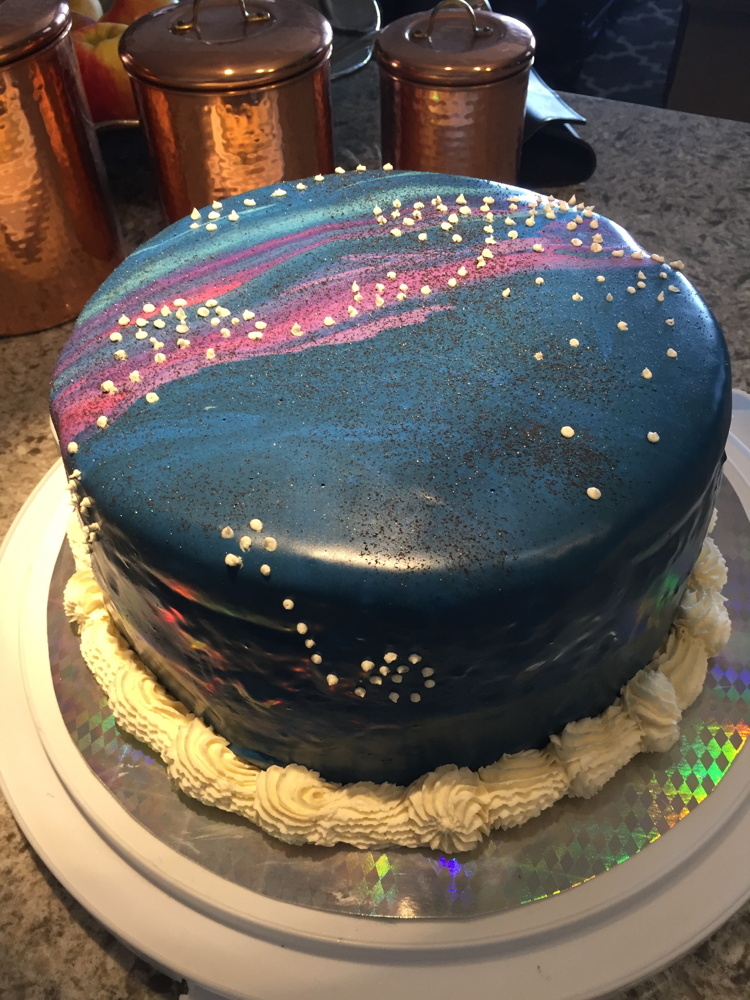

-

The
Noah Dorfman
Project
Mirror Glaze Galaxy Cake With Chocolate Chip Cookie Dough Filling
Galaxy Themed Mirror Glaze
Painting the Galaxy with Stars and Final Touches
Happy 17th Birthday to Me
Blowing Out My Candles with My Great Grandfather
 


The cake is built on a basic vanilla batter recipe. It is held together with homemade, eggless chocalate chip cookie dough filling. The layers were colored with blue and purle edible food coloring to match the theme.
The glaze is made with a mixture of white chocolate, corn syrup, condensed milk, and gelatin to give the desired mirror effect. The glaze was separated and dyed five different colors.
The mirror glazes were poured on incrementally and swirled to give a galactic effect. Black disco dust was sprinkled on to resemble small stars. Finally, larger stars and constellations were piped on using vanilla buttercream.
The cake was brought to Sunday dinner to share with family and friends. The addition of color flame candles illuminated the celebration.
My 92 year-old PopPop, "The Original Engineer", and inspiration in my life helped me wish for another successful year in the workshop.